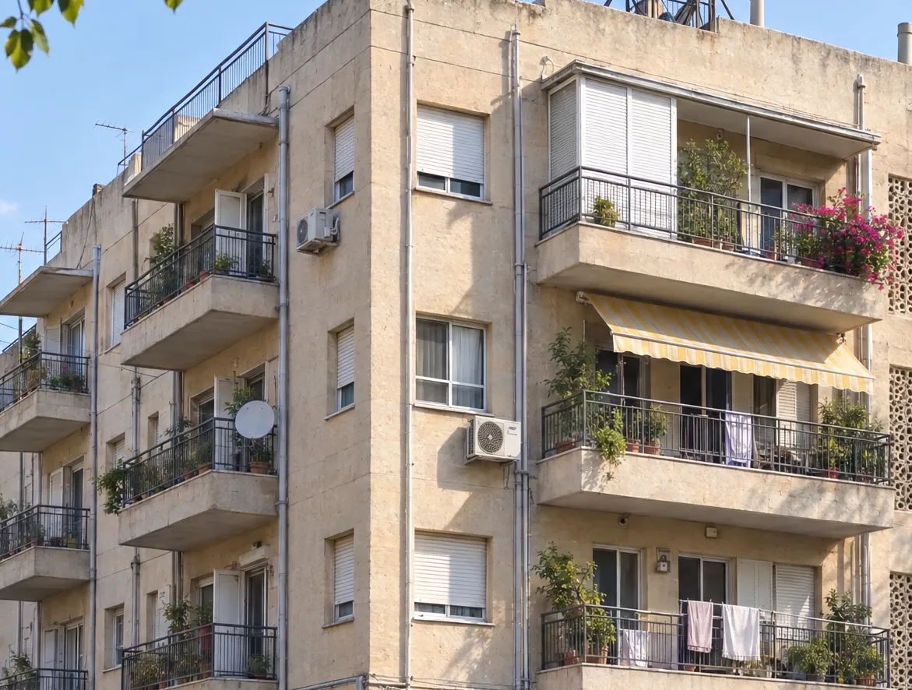

אחרי ביטול תמ"א 38: איך מקדמים היום התחדשות עירונית בבניין או במתחם בצורה בטוחה?
ביטול תמ"א 38 לא עצר את ההתחדשות העירונית – אלא העביר את מרכז הכובד למסלולים חדשים, ובראשם פינוי-בינוי מתחמי והתחדשות בניינית מכוח תוכניות עירוניות ייעודיות. עבור בעלי דירות, המשמעות המעשית היא שהתהליך הפך לתכנוני ומערכתי יותר: כדי לקדם פרויקט בצורה בטוחה כיום, צריך לבחון תחילה מהי המדיניות העירונית החלה על הבניין או הרחוב, לבנות התארגנות נכונה של הדיירים ולוודא שההסכם מול היזם מותאם למסלול התכנוני החדש.
זמן קריאה: 3 דקות
 עודכן לאחרונה:
עודכן לאחרונה:

במקום להסתמך על "תוספות לפי תמ"א" שכבר אינן בתוקף, בעלי דירות נדרשים היום להבין את התמונה העירונית הרחבה ולפעול בסדר נכון עוד לפני שמתקשרים עם יזם.
1. להבין מה המסלול הרלוונטי לבניין שלכם
מאז סיום תמ"א 38, כל רשות מקומית מקדמת התחדשות עירונית דרך כלי תכנון עדכניים – למשל תוכניות התחדשות עירונית כוללניות (כמו חלופת שקד או תוכניות בנייניות עירוניות), או איחוד של כמה בניינים סמוכים לפרויקט פינוי-בינוי מתחמי. הבדיקה הראשונה היא להבין אם הבניין שלכם מתאים להתחדשות נקודתית או שהוא חלק ממתחם רחב יותר.
2. התארגנות מוקדמת וליווי מקצועי לפני פנייה ליזמים
בגלל שהמסלולים החדשים כרוכים בהליכי תכנון מפורטים יותר, חשיבות ההתארגנות המוקדמת של בעלי הדירות גדלה אף יותר. מינוי נציגות דיירים ועורך דין מטעם הדיירים בלבד בשלב הראשוני מאפשר לבדוק את היתכנות הפרויקט, להימנע מהתחייבויות מוקדמות ליזם שאינו מתאים לסוג הפרויקט, ולנהל תהליך בחירה מסודר.
3. התאמת ההסכם ללוחות הזמנים ולבטוחות של המסלולים החדשים
בתוכניות התחדשות עירונית עכשוויות, שלב התכנון ואישור התב"ע או ההיתר עשוי להימשך זמן רב יותר מבעבר. לכן חשוב לעגן בהסכם אבני דרך ברורות ולוחות זמנים מחייבים ליזם (כולל זכות ביטול אם הפרויקט לא מתקדם), לצד מנגנוני תמורות שקופים, ערבויות מלאות לפי חוק המכר וכיסוי מלא של הוצאות הדיירים.
4. ראייה מתחמית ושיתוף פעולה עם השכנים בבניינים סמוכים
במקרים רבים, המפתח להיתכנות כלכלית ותכנונית היום הוא חיבור בין בניינים סמוכים. שיתוף פעולה מסודר בין נציגויות הבניינים וליווי משפטי שמאחד את האינטרסים של כלל בעלי הדירות מייצרים כוח מיקוח משמעותי מול היזמים והרשויות.
שאלות נפוצות על התחדשות עירונית אחרי תמ"א 38
האם בניין בודד עדיין יכול לעבור התחדשות עירונית היום?

בחלק מהערים קיימות תוכניות התחדשות בנייניות שמאפשרות הריסה ובנייה מחדש (ולעיתים חיזוק ועיבוי) גם ברמת המגרש הבודד, בהתאם למדיניות העירייה. בערים או באזורים אחרים, העירייה מעדיפה לקדם מתחמים של כמה בניינים יחד. בדיקה תכנונית ומשפטית מוקדמת נותנת תשובה ברורה.
מה הדבר הכי חשוב לבדוק בהסכם מול יזם במתווים החדשים?
מעבר לתמורות ולערבויות, חשוב להקפיד על סעיפי "לוחות זמנים ותנאים מתלים" – כלומר לקבוע תאריכי יעד ברורים להגשת תוכניות, לקבלת היתר ולפינוי, כך שהדיירים לא יישארו כבולים ליזם שנים ארוכות ללא התקדמות ממשית.